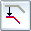
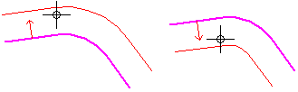
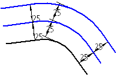

Offset elements
You can offset a single element or use each offset element as the next element to be offset.
Offset a single element
-
Select the Offset command
 .
. -
Click the element or elements you want to offset.
-
On the command bar, type the distance you want to offset the selected elements.
-
On the command bar, click the Side Step button

. -
Click to define the direction in which you want to offset the elements.

-
The Offset command places a dimension, which you can use to edit the value of the offset constraint.
-
Since the offset constraint is variational, you can delete the dimension and add other constraints to control the input and output geometry.
Offset a series of elements
-
Select the Offset command
. -
Click the Select Step button on the command bar: .
-
Scroll down until you see the selection list, and then select Chain.
-
Select the elements to offset—Click the element or elements you want to offset, and then click the Accept button on the command bar.
-
On the command bar, type the distance you want to offset the selected elements.
-
Click the Side Step button , and then click to place the first offset.
-
Click again to place the second offset. You can do this for as many offset iterations as you want to draw.
